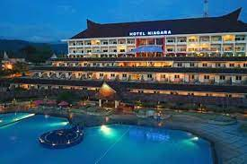
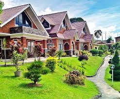

9 mins
1. Niagara Hotel Lake Toba and Resort
Terletak di kota kecil pedalaman Parapat, Niagara Hotel Lake Toba & Resort menawarkan kamar-kamar yang menawarkan pemandangan Danau Toba dengan akses WiFi berkecepatan tinggi gratis di semua kamar. Akomodasi ini juga menawarkan kolam renang luar ruangan, hot tub, dan meja depan 24 jam dengan layanan pramutamu. Semua kamar yang luas ber-AC dan menghadap pemandangan hijau subur. TV LED, ketel listrik, dan air kemasan gratis disediakan di semua kamar. Kamar mandi dalamnya dilengkapi dengan shower, pemanas air, dan perlengkapan mandi. Beberapa kamar menawarkan balkon pribadi. Terdapat 3 restoran di hotel yang menyajikan masakan lokal dan internasional. Bagi Anda yang ingin menikmati pemandangan Danau Toba sambil menikmati hidangan dapat mengunjungi restoran Tatap Teras. Restoran Panatapan menawarkan pemandangan kolam renang, sedangkan restoran Tabo Daine terletak di lobi hotel. Terdapat taman bermain anak-anak dengan berbagai kegiatan, seperti Flying Fox dan memetik buah di rumah kaca hotel. Fasilitas lain yang disediakan antara lain lapangan tenis, lapangan basket, dan jogging track. Para tamu juga dapat bersepeda mengelilingi hotel untuk menikmati panorama Danau Toba dan Gunung Toba. Niagara Hotel Lake Toba & Resort berjarak 14,1 km dari Bandara Sibisa dan 76,9 km dari Bandara Internasional Silangit. Pulau Samosir dapat dicapai hanya dalam 30 menit dengan kapal feri terjadwal yang terletak 2,8 km dari hotel. Para tamu juga dapat mengunjungi Panatapan Parapat yang berjarak 6 km dan Taman Eden yang berjarak 16 km.

9 mins
2.KHAS Parapat
Berjarak 6 menit berjalan kaki dari Rumah Pengasingan Soekarno, KHAS Parapat adalah resor bintang 3 tepi laut yang menawarkan akses ke pantai pribadi, restoran, dan ruang karaoke. Anda dapat menikmati parkir gratis dan WiFi dapat diakses di area umum. Kamar-kamar ber-AC-nya memiliki balkon, serta dilengkapi dengan minibar, brankas, dan TV kabel layar datar. Setiap kamar juga memiliki meja, area tempat duduk, dan fasilitas membuat kopi/teh. Fasilitas kamar mandinya meliputi handuk, sandal, dan perlengkapan mandi gratis. Hotel ini menawarkan 3 pilihan tempat bersantap, yang menyajikan berbagai hidangan internasional dan lokal, selain itu sarapan prasmanan dan layanan kamar juga tersedia. Anda dapat bersantai dan menikmati minuman panas di kedai kopi. Rumah Makan Marina menawarkan makanan Cina, berjarak 2 menit berjalan kaki dari resor. LaToSu Cafe & Resto menyajikan masakan Amerika, berjarak 6 menit berkendara. Mengoperasikan meja depan 24 jam, hotel ini menawarkan penyewaan mobil, meja layanan wisata, dan fasilitas pertemuan. Para tamu dapat menikmati pemandian dan layanan pijat di kamar. Anda juga dapat bersantai di teras, berjalan-jalan di taman, dan menggunakan fasilitas barbekyu. KHAS Parapat berjarak 6,2 km dari Batu Gantung dan 7,3 km dari Bukit Senyum, sedangkan Danau Toba Parapat dapat dicapai dalam 18 menit berkendara dari resor. Bandara terdekat adalah Bandara Internasional Silangit yang berjarak 78.1 km dari properti.
3. Parapat View Hotel
Terletak dekat dengan tepi danau Toba, The Parapat View Hotel berjarak 7 menit berkendara ke Rumah Pengasingan Soekarno, Parapat. Hotel ini menawarkan pemandangan danau, taman, dan restoran. Setelah seharian berjalan-jalan, para tamu dapat bersantai di kolam renang luar ruangan properti. WiFi tersedia gratis di area umum. Didekorasi dengan warna-warna alami dan kain lokal, kamar-kamarnya dilengkapi dengan meja dan TV layar datar. Air kemasan gratis. Kamar mandi dalamnya menyediakan shower, handuk, dan perlengkapan mandi gratis. Beberapa kamar memiliki balkon, meja, dan area tempat duduk. Sarapan sudah termasuk di semua kamar. Sarapan prasmanan menawarkan roti dan makanan Indonesia. Layanan kamar tersedia di The Parapat View Hotel. Anda dapat menikmati minuman dan pemandangan matahari terbenam di bar tepi kolam renang. Putra Kembar Cafe berjarak 13 menit berkendara dari properti, tempat yang nyaman dengan pemandangan danau yang menawarkan makanan ringan dan makanan Indonesia. Hotel ini memiliki meja depan 24 jam yang siap membantu Anda dengan layanan parkir dan laundry di lokasi. Properti ini menyediakan layanan pramutamu untuk membantu Anda dengan tiket dan informasi tentang acara dan hiburan lokal. Parapat View Hotel berjarak 7,9 km dari Bukit Senyum dan 5,2 km dari Batu Gantung. Danau Toba Parapat berjarak 11 menit berkendara dari hotel. Bandara terdekat adalah Bandara Internasional Silangit yang berjarak 77.3 km dari properti. Transfer bandara tersedia dengan biaya tambahan.
4.Danau Toba International Cottage Parapat
Danau Toba International Cottage Parapat adalah hotel di lokasi yang baik, tepatnya berada di Parapat. Dari Pelabuhan Ajibata, hotel ini hanya berjarak sekitar 0,34 km. Selain letaknya yang strategis, Danau Toba International Cottage Parapat juga merupakan hotel dekat Pelabuhan Ajibata berjarak sekitar 0,34 km dan Pelabuhan Parapat berjarak sekitar 0,65 km. Pelayanan memuaskan serta fasilitas hotel yang memadai akan membuat Anda nyaman berada di Danau Toba International Cottage Parapat. Tersedia kolam renang untuk Anda bersantai sendiri maupun bersama teman dan keluarga. Manjakan diri Anda dengan menikmati fasilitas spa yang memberikan harga dan kualitas pelayanan terbaik. Resepsionis siap 24 jam untuk melayani proses check-in, check-out dan kebutuhan Anda yang lain. Jangan ragu untuk menghubungi resepsionis, kami siap melayani Anda. Terdapat restoran yang menyajikan menu lezat ala Danau Toba International Cottage Parapat khusus untuk Anda. WiFi tersedia di seluruh area publik properti untuk membantu Anda tetap terhubung dengan keluarga dan teman. Dengan fasilitas yang memadai, Danau Toba International Cottage Parapat menjadi pilihan yang tepat untuk menginap.
5. Star Beach Hotel
Starbeach Hotel terletak tepat di sebelah Danau Toba dengan pemandangan fantastis yang akan memanjakan mata pelanggan kami. Tak hanya menikmati pemandangan, pelanggan kami juga diperbolehkan merasakan kesegaran air Danau Toba tepat di depan hotel. Kami juga menyediakan penyewaan jetski dan perahu kepada pelanggan kami agar liburan mereka lebih menyenangkan.
6.Tabo Cottages Tuktuk Lake Toba
Tabo Cottages adalah hotel yang natural dengan pekarangan hijau yang luas dan kamar sebahagian dari bahan daurulang dari rumah tradisional. Di pekarangan kita ada beberapa pondok untuk santai dan menikmati pemandangan danau dan gunung. Restoran dan bakery jerman sangat terkenal. Makanan spesial adalah prasmanan dengan khas lokal dan barat. Kopi adalah salah satu produk yang sangat kami banggakan karena kami memanggang biji kopi lokal sendiri, maka kopi di Tabo sangat segar dan harum. Kami perhatikan konsep bisnis berkelanjutan (sustainable) dan menjaga linkungan, hemat energi dan juga kami edukasi orang pribumi menjadi staf hotel yang berkualitas. Sering juga kami adakan aksi linkungan bersama tamu2 dan coba memperbaiki linkungan dan fasilitas seperti jalur treking secara relawan.
7. Bobocabin Signature Toba
Bobocabin Signature Toba, Medan menawarkan akomodasi di Parmonangan. Resor ini menawarkan pemandangan danau, teras, resepsionis 24 jam, dan Wi-Fi gratis. Setiap kamar di resor ini dilengkapi dengan meja. Kamar-kamarnya memiliki kamar mandi pribadi dengan bidet, perlengkapan mandi gratis, dan pengering rambut. Di Bobocabin Signature Toba, Medan, setiap kamar memiliki area tempat duduk
8. Juma Cottages
Juma cottage adalah sebuah guest house ramah lingkungan yang terletak di Tuk Tuk, dan memiliki taman. Terdapat restoran di tempat dan parkir pribadi gratis. Di guest house, unit-unitnya dilengkapi dengan balkon. Unit-unitnya dilengkapi dengan kamar mandi pribadi dan teko, sementara beberapa kamar dilengkapi dengan teras dan yang lainnya juga memiliki pemandangan pegunungan.